배관기능장 (2009-03-29 기출문제)
1과목: 임의구분
1. 구조가 간단하고 취급이 용이하며 부식성 유체, 괴상물질(덩어리)을 함유한 유체에 적합하여 주로 압력용기에 사용하는 안전밸브는?
- 스프링식
- 가용전식
- 파열판식
- 중추식
(정답률: 66%)

2. 배관 시공시 안전 수칙으로 틀린 것은?
- 가열된 관에 의한 화상에 주의한다.
- 점화된 토치를 가지고 장난을 금한다.
- 와이어 로프는 손상된 것을 사용해서는 안된다.
- 배관 이송시 로프가 훅(hook)에서 잘 빠지도록 한다.
(정답률: 97%)
3. 건물의 종류별 급탕량이 다음의 표와 같을 때, 5인 가족의 주택에서 중앙급탕방식 1일간의 급탕량은 몇 m3/d인가?
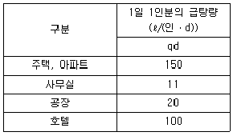
- 0.⑤5
- 0.75
- 0.10
- 0.50
(정답률: 79%)
4. 사용 목적에 따라 열교환기를 분류할 때 이에 대한 설명으로 틀린 것은?
- 응축기 : 응축성 기체를 사용하여 현열을 제거해 기화시키는 열교환기
- 예열기 : 유체에 미리 열을 주어 다음 공정의 효율을 증대시키는 열교환기
- 재비기 : 장치 중에서 응축된 유체를 재가열 증발시킬 목적으로 사용하는 열교환기
- 과열기 : 유체의 온도를 높이는데 사용하며 유체를 재가열하여 과열상태로 하기 위한 열교환기
(정답률: 73%)
5. 공정 제어의 순서로 맞는 것은?
- 검출기→전송기→조절계(비교부)→조작부
- 검출기→조절계(비교부)→전송기→조작부
- 검출기→전송기→조작부→조절계(비교부)
- 검출기→조절계(비교부)→조작부→전송기
(정답률: 55%)
6. 급수 배관 시공에서 수격작용(water hammering)을 방지하기 위해서 설치하는 것은?
- 스톱 밸브
- 코크 밸브
- 공기실
- 신축 이음
(정답률: 74%)
7. 자동화시스템에서 크게 회전운동과 선형운동으로 구분되며 사용하는 에너지에 따라 공압식, 유압식, 전기식 등으로 세분하는 자동화의 5대 요소 중 하나인 것은?
- 센서(sensor)
- 액츄에이터(actuator)
- 네트워크(network)
- 소프트웨어(software)
(정답률: 91%)
8. 화학 배관에 사용된 강관의 직선 길이 20m를 배관 작업 하였을 때 온도가 20℃이었다. 이 관의 사용온도가 50℃이었다면 강관의 신축길이는 이론상 몇 mm인가? (단, 강관의 선팽창계수는 0.000012 [1/℃]이다.)
- 0.72
- 7.2
- 72
- 720
(정답률: 59%)
9. 배수 트랩에서 봉수가 파괴되는 원인으로 거리가 먼 것은?
- 자기 사이펀 작용
- 감압에 의한 흡인 작용
- 모세관 작용
- 수격 작용
(정답률: 81%)
10. 공정제어에 있어서 마치 인간의 두뇌와 같은 작용을 하는 것으로 오차의 신호를 받아 어떤 동작을 하면 되는가를 판단한 후 처리하는 부분은?
- 검출기
- 전송기
- 조절기
- 조작부
(정답률: 86%)
11. 자동제어 시스템에서 시퀀스 제어(Sequence control)를 분류한 것으로 옳은 것은?
- 시한제어, 순서제어, 조건제어
- 정치제어, 추치제어, 프로세스제어
- 비율제어, 정치제어, 서보제어
- 프로그램제어, 추치제어, 서보기구
(정답률: 88%)
12. 집진장치에서 양모, 면, 유리섬유 등을 용기에 넣고 이곳에 함진가스를 통과시켜 분진입자를 분리ㆍ포착시키는 집진법은?
- 중력식 집진법
- 원심력식 집진법
- 여과식 집진법
- 전기 집진법
(정답률: 91%)
13. 플랜트 배관에서 관 내의 압력과 온도가 비교적 낮고 누설 부분이 작은 경우 정을 대고 때려서 기밀을 유지하는 응급조치법은?
- 인젝션법
- 코킹법
- 박스설치법
- 스토핑 박스법
(정답률: 81%)
14. 기송 배관의 일반적인 분류 방식이 아닌 것은?
- 진공식(vacuum type)
- 압송식(pressure type)
- 실린더식(cyllnder type)
- 진공 압송식(vacuum and pressure type)
(정답률: 93%)
15. 아세틸렌가스의 폭발 하한계[V%]와 폭발 상한계[V%] 값은?
- 폭발 하한계 : 4.0%, 폭발 상한계 : 74.5%
- 폭발 하한계 : 2.1%, 폭발 상한계 : 9.5%
- 폭발 하한계 : 2.5%, 폭발 상한계 : 81.0%
- 폭발 하한계 : 1.8%, 폭발 상한계 : 8.4%
(정답률: 81%)
16. 화학설비 장치 배관 재료의 구비 조건으로 틀린 것은?
- 접촉 유체에 대해 내식성이 클 것
- 크리프 강도가 클 것
- 고온 고압에 대하여 기계적 강도가 있을 것
- 저온에서 재질의 열화(劣化)가 있을 것
(정답률: 88%)
17. 배관설비의 기계적(물리적) 세정방법이 아닌 것은?
- 물 분사 세정법
- 숏 블라스트 세정법
- 피크 세정법
- 스프레이 세정법
(정답률: 63%)
18. 고층 건물에 사용하는 일반적은 급수 조닝(zoning) 방식이 아닌 것은?
- 층별식
- 조압 펌프식
- 중계식
- 압력탱크식
(정답률: 70%)
19. 프랑스에서 1967년경 개발된 특수 이음쇠로서 배수의 수류에 선회력을 만들어 관내 홀을 만들도록 되어 있고, 특수 곡관은 수직관에서 내려온 배수의 수류에 선회력을 만들어 공기 홀이 지속되도록 만든 배수 통기 방식은?
- 섹스티아 방법
- 결합 통기 방법
- 신정 통기 방법
- 소벤트 방법
(정답률: 84%)
20. 파이프 래크 상의 배관의 종류 중 병렬로 배치된 기기의 간격이 6m 이상이며, 그 사이에 또 다른 기기를 설치하여 노즐을 접속시키는 배관으로 열교환기, 펌프, 용기(vessel)등에서 단위 기기(unit) 경계까지의 생산(product)배관은?
- 급수 배관
- 프로세스 배관
- 유틸리티 배관
- 라인 인덱스 배관
(정답률: 57%)
2과목: 임의구분
21. 감압 밸브를 작동 방법에 따라 분류할 때 여기에 해당하지 않는 것은?
- 스트레이너 형
- 벨로스 형
- 다이어프램 형
- 피스톤 형
(정답률: 68%)
22. 원심력 모르타르 라이닝 주철관에 대한 일반적인 특징설명으로 올바른 것은?
- 삽입구를 포함하여 관의 내면 모두를 라이닝 한다.
- 라이닝을 실시한 관을 모르타르를 통하여 물이 관속으로 침투하기 쉽다.
- 원심력 덕타일 주철관은 라이닝 할 수 없다.
- 라이닝을 실시한 관은 마찰 저항이 적으며 수질의 변화가 적다.
(정답률: 70%)
23. 구조상 디스크와 시트가 원추상으로 접촉되어 폐쇄하는 밸브로서 유체는 디스크 부근에서 상하방향으로 평행하게 흐르므로 근소한 디스크의 리프트라도 예민하게 유량에 관계되므로 죔 밸브로서 유량조절에 사용되는 밸브는?
- 글로브 밸브
- 체크 밸브
- 슬루스 밸브
- 플러그 밸브
(정답률: 69%)
24. 배관용 타이타늄관에 관한 설명으로 틀린 것은?
- 내식성, 특히 내해수성이 좋다.
- 제조방법에 따라 이음매 없는 관과 용접관으로 나눈다.
- 화학장치, 석유정제장치, 펄프제지공업장치 등에 사용된다.
- 관은 안지름이 최소 200mm부터 1000mm까지 있고, 두께는 20cm 이상이다.
(정답률: 80%)
25. 열전도율이 적고 300~320℃에서 열분해하는 보온재로 방습 가공한 것은 습기가 많은 곳의 옥외 배관에 적합하며, 250℃ 이하의 파이프, 탱크의 보냉재로 사용되는 것은?
- 규조토
- 탄산 마그네슘
- 석면
- 코르코
(정답률: 65%)
26. 플랜지 시트 종류 중 전면 시트(seat) 플랜지를 사용할 때 사용 가능한 호칭 압력으로 가장 적합한 것은?
- 1kgf/cm2 이하
- 16kgf/cm2 이하
- 40kgf/cm2 이하
- 63kgf/cm2 이하
(정답률: 85%)
27. 스위블형 신축 이음쇠를 사용할 경우 흡수할 수 있는 신축 이음의 크기는 직관 길이 30m에 대해 회전관을 보통 몇 m정도로 하여 조립하는가?
- 0.3
- 0.5
- 1.5
- 3
(정답률: 74%)
28. 위생(배수) 트랩의 구비 조건이 아닌 것은?
- 봉수 깊이는 20mm 이하이어야 한다.
- 봉수가 확실해야 한다.
- 구조가 간단해야 한다.
- 스스로 세척장용을 하는 것이어야 한다.
(정답률: 73%)
29. 비중이 0.92~0.96 정도로 염화비닐관보다 가볍고 -60℃에서도 취화하지 않아 한냉지 배관에 적절한 관은?
- 폴리에틸렌관
- 경질 염화비닐관
- 연관
- 동관
(정답률: 72%)
30. 양조공장, 화학공장에서의 알콜, 맥주 등의 수송관 재료로 가장 적합한 것은?
- 주석관
- 수도용 주철관
- 배관용 탄소강관
- 일반 구조용 강관
(정답률: 84%)
31. 본래 배관의 회전을 제한하기 위하여 사용되어 왔으나 근래에는 배관계의 축 방향의 이동을 허용하는 안내 역할을 하며 축과 직각 방향의 이동을 구속하는데 사용되는 것은?
- 리지드 행거(Rigid hanger)
- 앵커(Anchor)
- 가이드(Guide)
- 브레이스(brace)
(정답률: 75%)
32. 납관(연관)이음에 사용되는 용융온도가 232℃인 플라스턴 합금의 주요 성분 비율로 맞는 것은?
- Pb 60%+Sn 40%
- Pb 40%+Sn 60%
- Pb 50%+Sn 50%
- Pb 30%+Sn 70%
(정답률: 81%)
33. 합성고무 패킹으로 내열 범위가 -46~121℃인 것은?
- 테프론
- 네오프렌
- 석면
- 코르코
(정답률: 79%)
34. 관의 내외에서 열교환을 목적으로 하는 장소에 사용되는 보일러, 열 교환기용 합금강 강관의 KS 재료 기호는?
- STH
- STHA
- SPA
- STS×TB
(정답률: 81%)
35. 관지름 20mm 이하의 구리관에 주로 사용되며, 끝을 나팔모양으로 넓혀 설비의 점검, 보수 등을 위해 분해할 필요가 있는 배관부에 연결하는 이음은?
- 플랜지 이음
- 납땜 이음
- 압축 이음
- 나사 이음
(정답률: 76%)
36. 주철관 절단시 주로 사용되며 특히 구조상 매설된 주철관의 절단에 가장 적합한 공구는?
- 파이프 커터
- 연삭 절단기
- 기계 톱
- 링크형 파이프 커터
(정답률: 90%)
37. 배관 내의 압력이 196kPa 일 때 체적이 0.01m3, 온도가 27℃ 이었다. 이 가스가 동일 압력에서 체적이 0.015m3으로 변하였다면 이 때 온도는 몇 ℃가 되는가? (단, 이 가스는 이상기체라고 가정한다.)
- 27
- 127
- 177
- 400
(정답률: 66%)
38. 아크 에어 가우징에 대한 설명으로 틀린 것은?
- 충분한 용량의 과부하 방지 장치가 부착된 직류역극성(DCRP)의 전원에 정전류(constant current) 특성의 용접기가 활용도가 높다.
- 개로 전압이 최소 60[V] 이상이어야 작업에 지장이 없다.
- 그라인딩이나 치핑 또는 가스 가우징보다 작업 능률이 2~3배 높다.
- 스테인리스강, 알루미늄, 동합금 등 비철금속에는 적용할 수 없다.
(정답률: 74%)
39. 특수한 형상을 가지고 있는 주철과 끝에 고무링을 삽입하고 가단 주철제 칼라를 죄어 이음하는 접합 방식은?
- 소켓 접합
- 기계적 접합
- 빅토릭 접합
- 플랜지 접합
(정답률: 65%)
40. CO2 아크 용접법 중에서 비용극식 용접에 해당하는 것은?
- 순 CO2 법
- 혼합 가스법
- 탄소 아크법
- 아코스 아크법
(정답률: 80%)
3과목: 임의구분
41. 산소ㆍ프로판 가스 절단시 가스혼합비는 프로판 가스 1에 대하여 산소는 어느 정도가 가장 적합한가?
- 1.0
- 2.0
- 3.0
- 4.5
(정답률: 69%)
42. 폴리에틸렌관에 가열 지그를 사용하여 관 끝의 바깥쪽과 이음관의 안쪽을 동시에 가열하여 용융이음 하는 것은?
- 턴 앤드 그루브 이음
- 인서트 이음
- 용착 슬리브 이음
- 용접 이음
(정답률: 77%)
43. 강관의 호칭 지름에 따른 나사 조임형 가단 주철제 엘보에서 나사가 물리는 최소 길이를 나타낸 것으로 틀린 것은?
- 20A:13mm
- 25A:15mm
- 32A:17mm
- 40A:23mm
(정답률: 70%)
44. 다음 그림과 같이 밑면이 30° 경사진 수조의 경사면의 길이 L=20m일 때 수조의 제일 낮은 바닥 P점의 수압(게이지 압력)은 약 몇 kPa인가?
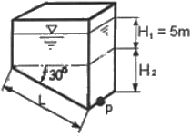
- 147kPa
- 176kPa
- 196kPa
- 250kPa
(정답률: 40%)
45. 관의 절단, 나사절삭, burr 제거 등의 일을 연속적으로 할 수 있고, 관을 물린 척을 저속 회전시키면서 다이헥드를 관에 밀어 넣어 나사를 가공하는 동력나사 절삭기의 종류는?
- 오스터형
- 호브형
- 리머형
- 다이헤드형
(정답률: 90%)
46. 배관설비의 유량 측정에 일반적으로 융용되는 원리(정리)인 것은?
- 상대성 원리
- 베르누이 정리
- 프랭크의 정리
- 아르키메데스 원리
(정답률: 89%)
47. 치수 수치의 표시 중 맞지 않는 것은?
- 길이의 치수는 원칙적으로 mm의 단위로 기입하고 단위 기호는 생략 한다.
- 각도의 치수 수치를 라디안의 단위로 기입하는 경우 그 단위기호 rad로 기입한다.
- 치수 수치의 소수점은 아래쪽 점으로 하고 숫자 사이를 적당히 띄워 그 중간에 약간 크게 찍는다.
- 치수 수치의 자리수가 많은 경우 3자리 마다 숫자의 사이를 적당히 띄우고 콤마를 찍는다.
(정답률: 70%)
48. 도면과 같은 배관도로 시공하기 위해 부품을 산출한 소요 부품 수가 올바른 것은?
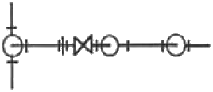
- 티(Tee):2개
- 엘보(elbow):5개
- 밸브(Valve):2개
- 유니언(union):3개
(정답률: 85%)
49. 건축배관 설비의 제도에서 위생설비도를 작도할 때 사용하는 도면으로 가장 거리가 먼 것은?
- 계통도
- 평면도
- 상세도
- 투시도
(정답률: 77%)
50. 그림과 같은 용접기호를 설명한 것으로 옳은 것은?
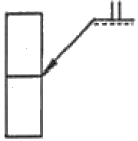
- I형 맞대기 용접 : 화살표 쪽에 용접
- I형 맞대기 용접 : 화살표 반대쪽에 용접
- H형 맞대기 용접 : 화살표 쪽에 용접
- H형 맞대기 용접 : 화살표 반대쪽에 용접
(정답률: 80%)
51. 아래 입체도의 제3각법 투상이 틀린 것은?
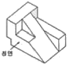
- 정면도
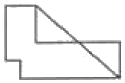
- 평면도
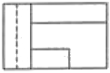
- 우측면도
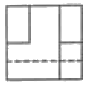
- 저면도
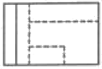
(정답률: 81%)
52. 계장형 도시기호 중 노즐타입의 유량검출기는?
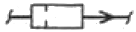
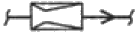
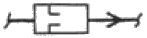
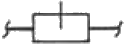
(정답률: 80%)
53. 관의 끝부분 표시방법에서 블라인더 플랜지 또는 스냅 커버 플랜지를 나타내는 기호는?
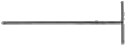
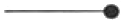
(정답률: 90%)
54. 보기와 같은 90°, 60°, 30°로 이루어진 직각 삼각형 모양의 앵글 브래킷의 C부 길이는 몇 mm인가?
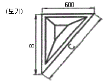
- 1000
- 1040
- 1200
- 1800
(정답률: 88%)
55. 다음 중 계수치 관리도가 아닌 것은?
- c 관리도
- p 관리도
- u 관리도
- x 관리도
(정답률: 54%)
56. 부적합품률이 1%인 모집단에서 5개의 시료를 랜덤하게 샘플링할 때, 부적합품수가 1개일 확률은 약 얼마인가? (단, 이항분포를 이용하여 계산한다.)
- 0.048
- 0.⑤8
- 0.48
- 0.58
(정답률: 42%)
57. 다음 [표]는 A 자동차 영업소의 월별 판매실적을 나타낸 것이다. 5개월 단순이동평균법으로 6월의 수요를 예측하면 몇 대인가?
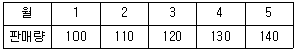
- 120
- 130
- 140
- 150
(정답률: 84%)
58. 다음 중 반즈(Ralph M. Barnes)가 제시한 동작경제의 원칙에 해당되지 않는 것은?
- 표준작업의 원칙
- 신체의 사용에 관한 원칙
- 작업장의 배치에 관한 원칙
- 공구 및 설비의 디자인에 관한 원칙
(정답률: 69%)
59. 다음 검사의 종류 중 검사공정에 의한 분류에 해당되지 않는 것은?
- 수입검사
- 출하검사
- 출장검사
- 공정검사
(정답률: 85%)
60. 품질관리 기능의 사이클을 표현한 것으로 옳은 것은?
- 품질개선-품질설계-품질보증-공정관리
- 품질설계-공정관리-품질보증-품질개선
- 품질개선-품질보증-품질설계-공정관리
- 품질설계-품질개선-공정관리-품질보증
(정답률: 59%)